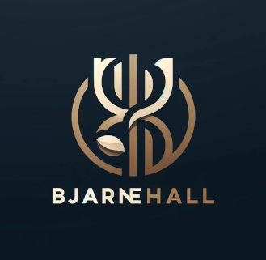

<!DOCTYPE html>
<html lang="sv">
</html>
<html>
<head>
    <meta charset="utf-8">
    <link rel="stylesheet" href="style.css">
    <meta name="viewport" content="width=device-width, initial-scale=1" />
    <title>Web-dev</title>
</head>
<body>
    <div class="header">
        <div class="logo">
            
        </div>
        <nav>
            <ul>
                <li><a href="index.html">Hem</a></li>
                <li><a href="about.html">Om</a></li>
            </ul>
        </nav>
    </div>
    <article>
        <h2>Om Jonas</h2>
    <p>Jag föddes i Jönköping men levde mina första 11 år i ett samhälle
        som heter Forserum och ligger 20 min utanför. Därefter flyttade
        jag till Jönköping där jag levde mina ungdomsår tills jag och min
        sambo Hanna flyttade långt ut i skogen intill Hökenås naturområde
        söder om tidaholm.<br>
        Jag gick på Energiprogrammet under min gymnasietid och efter det 
        började jag arbete som VVS montör på ett företag som hette Bad & VVS.
        Här arbetade jag i nästan fyra år och tog under denna tid mitt VVS
        certifikat. Efter denna tid började jag arbeta som kyltekniker på 
        BLM kyl & storkök där jag arbetat främst med att bygga och reparera
        utrustning avsedd till kyl & frysrum eller till att värma bostäder.
        Hösten 2022 började jag känna att jag kommit så långt i min utveckling
        att jag kände för nya utmaningar. Så jag började läsa upp matematik 
        under första halvan av 2023 för att sedan i september börja studera
        programmering på Blekinge tekniska högskola. Redan första veckan kände 
        jag att jag hamnat rätt och att tankesättet kring problemlösning inom 
        programmering påminde om de utmaningar jag stått inför när jag felsökt
        maskiner.
        
    </p>
    </article>
    </p>
</body>
</html>